Субтитры: Русские и Английские | 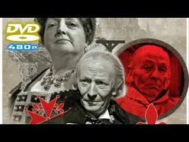 |
|---|---|
Субтитры: отсутствуют | 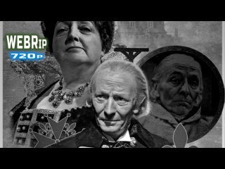 |
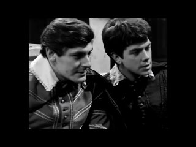 эп.1 - Война богов (Ian Levine) | 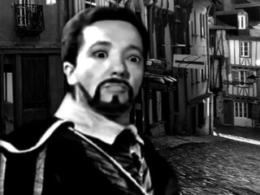 эп.1 - Война богов. Отрывок: Вступительные сцены (Josh Snares) |
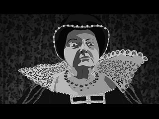 эп.3 - Жрец смерти. Отрывок: Адмирала застрелили (Ian Levine) | 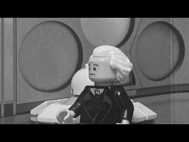 эп.4 - Колокол судьбы. Отрывок: Заключительные сцены (Finnholm) |
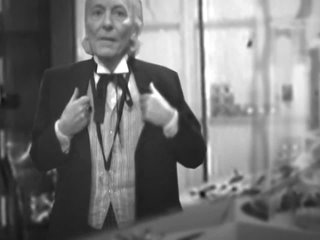 эп.4 - Колокол судьбы. Отрывок: Они все ушли (Josh Snares) | 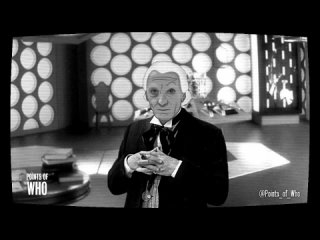 эп.4 - Колокол судьбы. Отрывок: Они все ушли (Points of Who) |
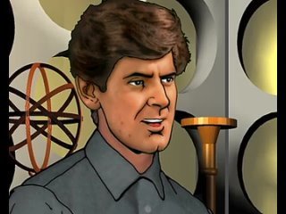
| 1. Война бога 2. Морской попрошайка 3. Священник смерти 4. Колокол судьбы | Все эпизоды утеряны * Имеется реконструкция |
|---|
| |
«Резня в канун Святого Варфоломея» переносит Доктора и Стивена в Париж 1572 года — накануне трагедии: в воздухе витает напряжение, а заговор против гугенотов вот‑вот прорвётся насилием. Герои пытаются помочь отдельным людям, но бессильны остановить надвигающуюся резню — история требует идти вперёд, не меняя её хода. Серия жёстко раскрывает принцип невмешательства: иногда самое трудное решение — не спасать. Финал обостряет конфликт Стивена с Доктором: спутник не может принять цену «не менять историю», и это ставит под вопрос их дальнейший путь вместе.
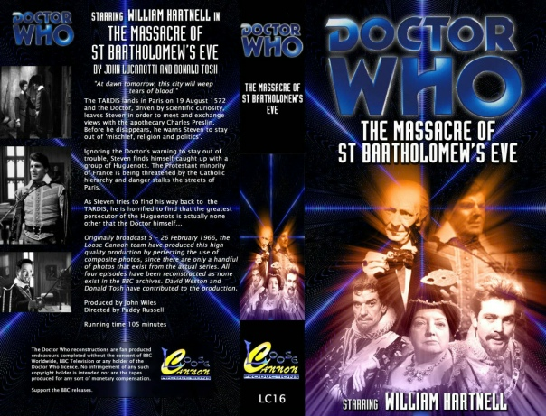 LC recon - ноябрь 2001 * Версия в нашей группе |
|---|
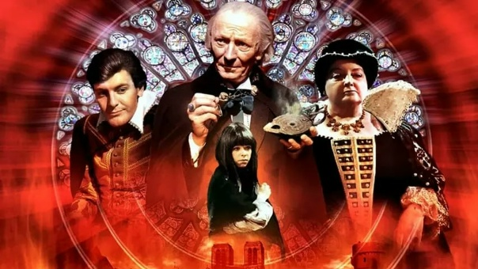
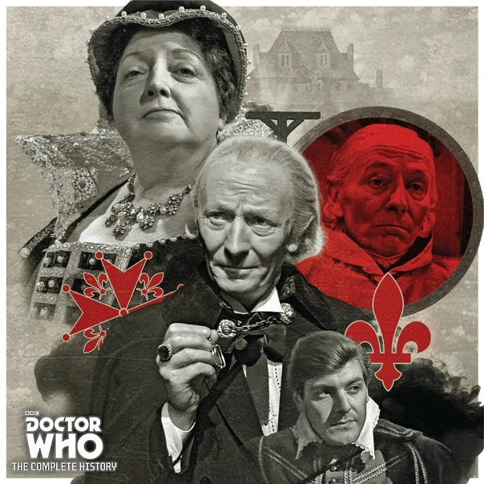
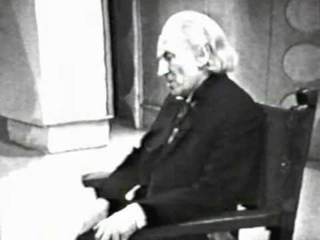